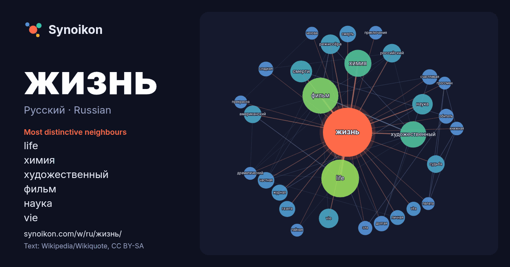

Русский · Russian · popular word
жизнь
“life” · The words found around it in 1009 instances from Russian Wikipedia, Wikiquote.

Most distinctive neighbours
- life 74×
- химия 40×
- художественный 33×
- фильм 28×
- наука 22×
- vie 22×
- режиссёра 16×
- судьба 16×
- частная 15×
- счастливая 14×
- долгая 14×
- сладкая 13×
- обитель 13×
- газета 12×
- смерть 12×
- vita 12×
- американский 12×
- российский 12×
- зла 12×
- смерти 11×
× = how many times more often than in general Russian Wikipedia text.
Most frequent neighbours
- life 78
- фильм 71
- химия 40
- художественный 38
- смерти 26
- наука 23
- vie 21
- режиссёра 21
- российский 19
- американский 17
- название 17
- судьба 17
- людей 16
- смерть 15
- частная 15
- человека 15
- газета 14
- журнал 14
- долгая 13
- счастливая 13
In context
- Жизнь (лат. vita) — основное понятие философии и биологии — активная форма существования материи от рождения до смерти, которая в обязательном порядке Wikipedia snippets · Жизнь
- Жизнь после смерти или загро́бная жизнь — религиозно-философское представление о продолжении сознательной жизни человека после смерти. В большинстве случаев Wikipedia snippets · Жизнь после смерти
- «Жить жизнь» — российский сериал в жанре психологического триллера по одноимённому роману Анны Богинской. Премьера состоялась 13 апреля 2023 года в онлайн-кинотеатре Wikipedia snippets · Жить жизнь
- «Жизнь за царя́» («Ива́н Суса́нин») — опера Михаила Ивановича Глинки в 4 актах с эпилогом. В опере рассказывается о событиях 1613 года, связанных с походом Wikipedia snippets · Жизнь за царя
- «Одна жизнь» (англ. One Life) — художественный фильм режиссёра Джеймса Хоуза. Главную роль, британского гуманиста Николаса Уинтона, исполнил Энтони Хопкинс Wikipedia snippets · Одна жизнь
- Игра «Жизнь» (англ. Game of Life) — клеточный автомат, придуманный английским математиком Джоном Конвеем в 1970 году. Это игра без игроков, в которой Wikipedia snippets · Игра «Жизнь»
- «Жизнь Чака» (англ. The Life of Chuck) — американский фэнтезийный драматический фильм 2024 года, снятый Майком Флэнаганом по собственному сценарию. Основан Wikipedia snippets · Жизнь Чака (фильм)
- Внеземна́я жизнь (инопланетная жизнь) — гипотетическая жизнь, возникшая и существующая за пределами Земли. Является предметом изучения астробиологии (экзобиологии) Wikipedia snippets · Внеземная жизнь
More Russian words
- бог
- власть
- вода
- деньги
- здоровье
- золото
- искусство
- истина
- история
- климат
- кошка
- мост
- наука
- пища
- поезд
- природа
- работа
- семья
- сердце
- смерть
- собака
- язык
Precomputed on 2026-10-09 with default settings (±5 words, medium corpus). The interactive map can refresh it with live data.